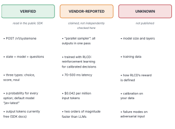
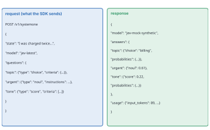
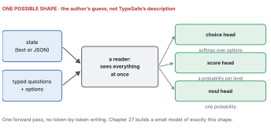
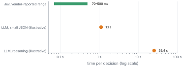
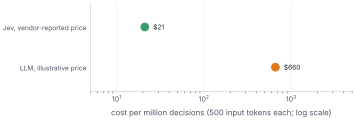
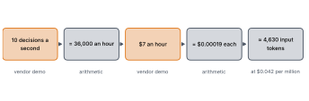

A wise man, therefore, proportions his belief to the evidence.
— David Hume, An Enquiry Concerning Human Understanding, 1748
Here’s a confession that shapes this whole chapter. I’ve never called Jev.
When I wrote this book, Jev had been public for a couple of weeks, in early access, and I didn’t have an API key. What I did have was TypeSafe’s official Python library, which anyone can download and read, TypeSafe’s public documentation, a stream of launch coverage and early commentary, and a growing pile of research papers from people who had used it.
“So how much can anyone actually say about what’s inside it?”
More than you’d think, and less than most articles imply. The trick is to sort every claim into one of three piles: what you can verify yourself, what the vendor says, and what nobody outside the company knows. That habit is worth more than any single fact in this chapter, because Jev won’t be the last new model you have to evaluate from the outside.
By the end of this chapter
Sort claims about a new model into verified, vendor-reported and unknown.
Read Jev’s interface from its public SDK: what goes in, what comes out.
Understand the two technical claims at the heart of Jev: the “parallel sampler” and RLCD.
Do the price and latency arithmetic yourself, and check the vendor’s numbers against each other.
Know what you’d still need to test before trusting it.
9.1 Three piles

Figure 9.1: Every claim about Jev in this book, sorted into three piles. The first pile you can check yourself today. The second is what TypeSafe says. The third is what nobody outside the company can know yet.
Figure fig-ledger is a summary of the book’s facts ledger, which lives in the repository as docs/jev-facts.md. The rules I followed:
Verified means I read it myself in something anyone can inspect. For Jev, that’s mainly the typesafe-sdk library on PyPI, version 0.7.2, including the data models generated from the API’s own specification.
Vendor-reported means TypeSafe, or coverage quoting TypeSafe, said it. It may well be true. It hasn’t been independently checked here, and every such number carries that label.
Unknown means it hasn’t been published, so any statement about it is a guess, and I’ll say so when I guess.
Treat every vendor number in this book as a claim to check, not a fact. A good habit: when a claim about a model appears without a pile attached, ask which pile it belongs in.
9.2 What we can verify: the interface
Jev’s interface is refreshingly small. You send one request to one endpoint, POST /v1/systemone, with three things:
state: the situation, as text, a JSON object or a list;
model: which model to use (the library’s default is jev-latest);
questions: a set of named, typed questions about that state.
And you get back, for each question, a typed answer with probabilities, plus a count of tokens used.

Figure 9.2: A real request as the official SDK builds it, and the response. The answers here come from the book’s mock, but their shape is exactly what the SDK’s own data models expect.
You don’t have to take my word for the shape. Here’s the exchange as the SDK actually sends it. The mock records it on the way through.
Try it
exchanges = []client = TypeSafeClient(api_key="mock", transport=MockJevTransport(log=exchanges))client.system_one( state="I was charged twice. Please fix this ASAP.", questions={"topic": Choice(criteria={"billing": None, "technical": None}),"urgent": Noul(instructions="Does this need a reply today?"), },)request_body, response_body = exchanges[0]print(json.dumps(request_body, indent=1))
{
"state": "I was charged twice. Please fix this ASAP.",
"model": "jev-latest",
"questions": {
"topic": {
"type": "choice",
"criteria": {
"billing": null,
"technical": null
}
},
"urgent": {
"type": "noul",
"instructions": "Does this need a reply today?"
}
}
}
A few details from the SDK and TypeSafe’s documentation are worth knowing (TypeSafe AI 2026b). A choice answer includes the chosen label, a confidence and a probability for every label. A score answer includes an expected score, a confidence, the rubric as a legend and a probability for every level. A noul (yes or no) answer is a single number, the probability of “yes”, with no confidence attached. The schema describes output tokens as “currently free of charge”. And the library handles retries and rate limits for you, which Chapter 16 puts to use.
What about confidence? TypeSafe’s documentation describes it as a statistic computed from the shape of the answer’s probabilities: high when they’re piled on one option, low when they’re spread across several. It doesn’t publish the formula. Its quick-start example shows why that matters: a support ticket goes to “technical” with probability 0.85, and the answer’s confidence is 0.78. So real confidence isn’t simply the top probability. The book’s mock uses that simplest stand-in anyway, the top option’s probability, and the repository’s docs/mock-design.md says so. With a real key, read the probabilities and test confidence on your own labels before you set a threshold on it.
9.3 What TypeSafe says: two ideas
Two claims sit at the centre of how TypeSafe describes Jev: a new architecture with a “parallel sampler”, and a training method it calls RLCD (TypeSafe AI 2026a, 2026b).
A “parallel sampler”. An LLM, as Chapter 6 showed, writes one token at a time, each waiting for the last. TypeSafe says Jev instead produces all its outputs in a single pass. It doesn’t write an answer; it computes one. That’s the claimed source of the speed. The documentation adds that every question is evaluated in parallel and in isolation against the same state, so adding questions barely changes the response time (TypeSafe AI 2026b).
RLCD: reinforcement learning for calibrated decisions. TypeSafe contrasts this with RLHF, which rewards answers people prefer (Chapter 5), and with reinforcement learning from verifiable rewards, which rewards answers a program can check. RLCD, they say, rewards honest probabilities.
We don’t know the details of either. But you already have the background to think about them clearly. Chapter 2 showed that a proper scoring rule, like log loss, makes honesty the best possible strategy: you can’t improve your average score by exaggerating. If RLCD’s reward is built on a rule like that, calibration is what it would be pushing towards. That’s an inference, not something TypeSafe has published, and it still wouldn’t guarantee calibration on your data, as Chapter 11 will show.

Figure 9.3: One possible shape for a model like this: a reader that looks at the state and the questions together, then typed “heads” that each turn the result into probabilities, all in one pass. This is my guess, based on the interface and Chapter 5, and not TypeSafe’s description.
If you want a mental model, Figure fig-guess is mine, and I want to be very clear that it’s a guess. It’s built from what the interface demands and from what Chapter 5 said about readers and writers. It’s also a design you can build yourself, which is exactly what Chapter 20 does.
9.4 The numbers: speed and price
TypeSafe and its launch coverage report end-to-end latency of roughly 70 to 500 milliseconds, and “two orders of magnitude” faster than LLMs on System One tasks. Both are vendor-reported.

Figure 9.4: Time per decision on a log scale: the vendor-reported range for Jev, and the illustrative LLM figures used throughout this book. The LLM figures aren’t measurements; they’re the stated assumptions from Chapter 6.
One critic pointed out that the most dramatic speed multipliers in the launch material compare Jev with slow reasoning models, which think for a long time before answering (regolo.ai 2026). That’s a fair comparison for some uses and an unfair one for others. Against a fast, non-reasoning LLM asked for a one-word label, the gap is much smaller. Always ask: faster than what, doing what?
The price is where the story gets interesting. The listed price is $0.042 per million input tokens, with output free. For a decision that reads about 500 tokens of state and questions, that’s about $21 per million decisions.

Figure 9.5: Cost per million decisions of 500 input tokens each: Jev at its vendor-reported price, and an LLM at this book’s illustrative mid-range price, which is an assumption, not a quote.
Using this book’s illustrative LLM prices ($1.00 per million input tokens, $4.00 per million output, and 40 output tokens for a small JSON answer), the same million decisions would cost about $660. That’s roughly 31 times more (Figure fig-cost). Real LLM prices range over two orders of magnitude, so treat the ratio as a shape. Chapter 12 is about why that shape might matter more than any benchmark.
9.5 Check the claims against each other
Here’s a habit I’d love you to leave this chapter with. When a vendor gives you several numbers, see whether they agree with each other.
TypeSafe’s launch demo had Jev playing the video game Doom, making decisions from a text description of the game state about ten times a second, at a reported cost of about $7 an hour. Do those numbers hang together with the listed price?

Figure 9.6: A consistency check using only the vendor’s own numbers. Ten decisions a second at $7 an hour means each decision costs about two hundredths of a cent, which at the listed price implies each decision read around 4,600 input tokens: a large but plausible description of a game state.
Ten decisions a second is 36,000 an hour. At $7 an hour, each decision costs about $0.0002. At $0.042 per million input tokens, that implies about 4,630 tokens of game state per decision. That’s plausible for a detailed text description of a game screen (Figure fig-doom-check). The numbers are consistent. That doesn’t prove them, but if they’d implied three tokens per decision, or three million, you’d have learned something important.
9.6 What we don’t know
Here’s the uncomfortable part: the unknowns are exactly the things a decision layer depends on.
We don’t know the model’s size, its architecture or its training data. We don’t know how well its probabilities are calibrated on data like yours. We don’t know how it behaves on adversarial input, like the planted sentence from Chapter 7. We don’t know how stable its behaviour is across versions: jev-latest is an alias, and aliases move. And by design, it gives no reasons, only probabilities. Some early critics called that a compliance problem for regulated uses (DataCamp 2026). Chapter 14 will answer it with decision logs that audit the policy rather than the model.
None of those unknowns are reasons to avoid a new model. They’re reasons to test it, on your own data, with the tools you already have. The next two chapters do exactly that: first by understanding each question type properly, then by testing calibration the way Chapter 3 taught.
Where this breaks
Vendor numbers are measured on the vendor’s tasks, in the vendor’s setup, against comparisons the vendor chose. Early-access models change quickly, so behaviour you test this month may shift next month. Pin a model version where you can, rather than jev-latest, and re-run your checks when it changes. And be wary of third-party “benchmarks” that appeared within days of launch: some are careful, some aren’t, and most can’t tell you how the model behaves on your data.
Set the threshold
Kestrel’s agent makes about 3,700 small decisions a day (Chapter 7’s count, scaled up). At the vendor-reported price and 500 tokens each, what would a year of those decisions cost? At the illustrative LLM price? At what daily volume would the difference be worth a week of an engineer’s time to switch?
(About 1.35 million decisions a year: roughly $28 at the Jev price and about $900 at the illustrative LLM price. At Kestrel’s volume, price alone doesn’t justify a switch. Speed and calibration might. At a hundred times the volume, price becomes a real argument.)
I started without an API key, so we sorted what can be known into three piles. The interface was verifiable, and small: state and typed questions in, probabilities out. The speed and training method were the vendor’s claims, and we could reason about them without accepting them. The prices let us do our own arithmetic, and the vendor’s numbers turned out to agree with each other. What remained unknown was exactly what a decision layer depends on, which means the next job is testing.
Find a claim about Jev in a recent article and put it in one of the three piles. What would it take to move it to “verified”?
In the lab, send a score question with five levels instead of three. Look at the raw response. What does score mean when it’s 2.4?
Redo the Doom check with a different assumption: suppose each decision read 500 tokens. What hourly cost would that imply? What would you conclude if the vendor had quoted that figure instead?
Write three questions you’d ask TypeSafe before using Jev for a decision that affects customers. Which pile would each answer go in?
Next: the three question types, choice, score and noul, one at a time, with the design choices that make each work well.